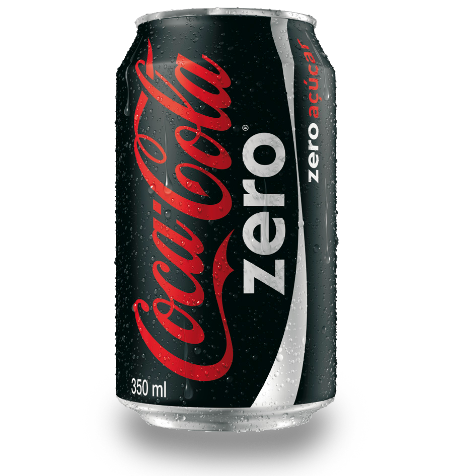
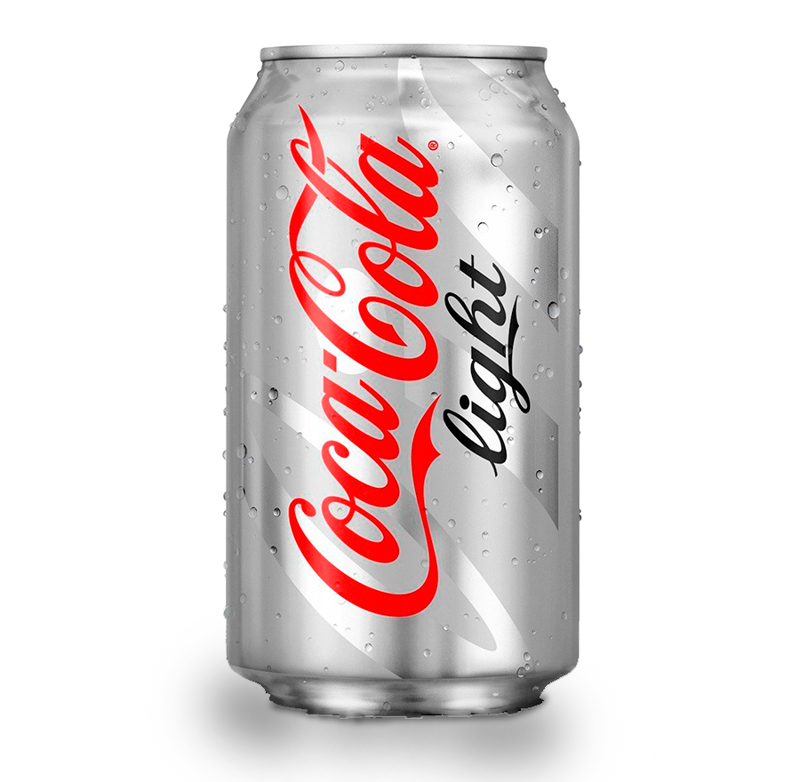

Nuestro sabor
Unico
La de siempre, original y deliciosa, la que refresca a millones de personas en todo el mundo. Fue creada en 1886 por el farmacéutico Dr. John Pemberton, siendo la bebida que desde hace más de 130 años, te acompaña de una forma especial en ciertos momentos cotidianos de tu vida.¡Sin olvidarnos de los momentos únicos! ¿Recuerdas cuando en 1985, Coca-Cola fue el primer refresco que viajó al espacio?.
Mas Informacion

- 
- 